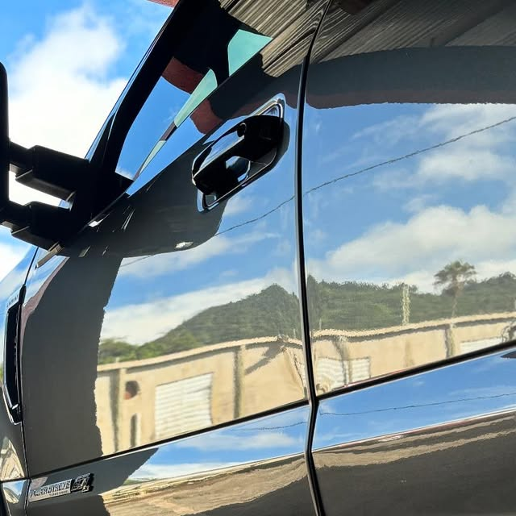
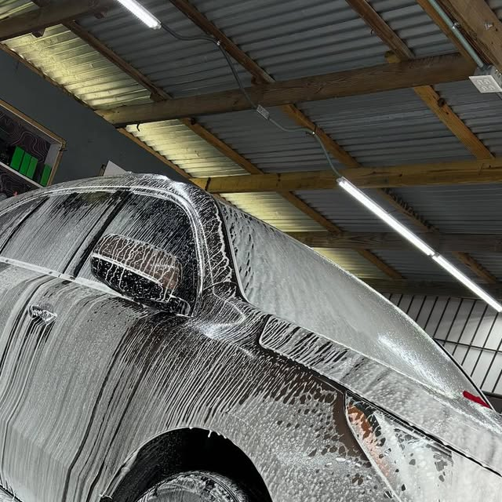
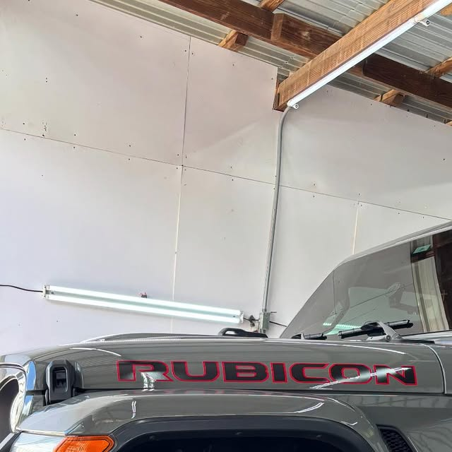
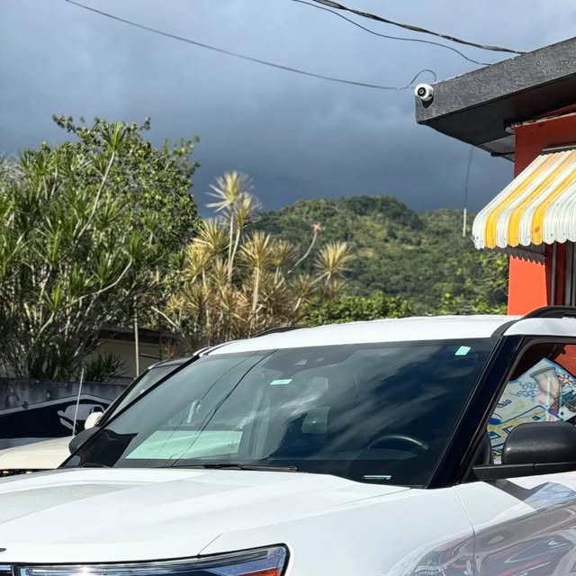
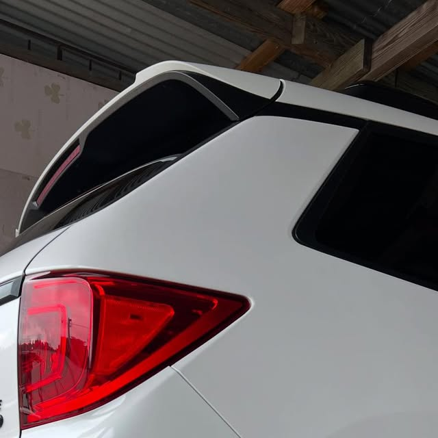
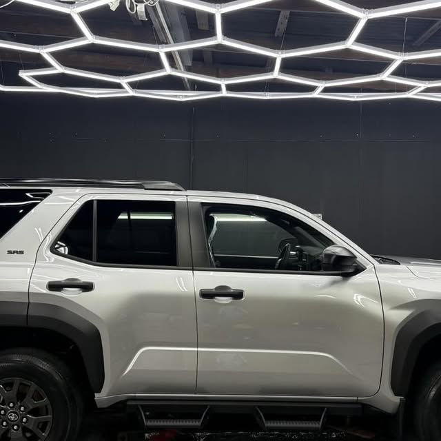
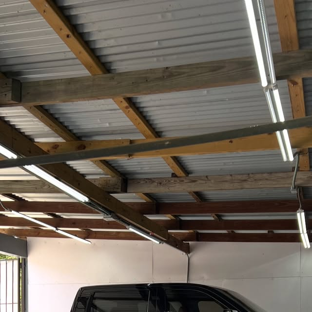
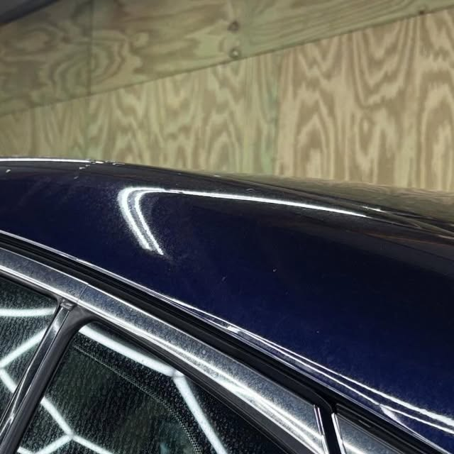
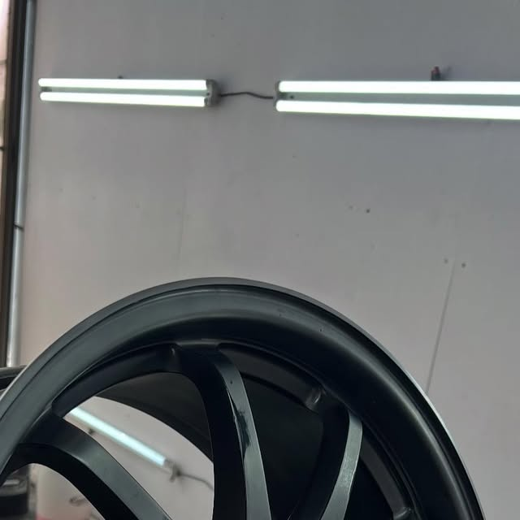
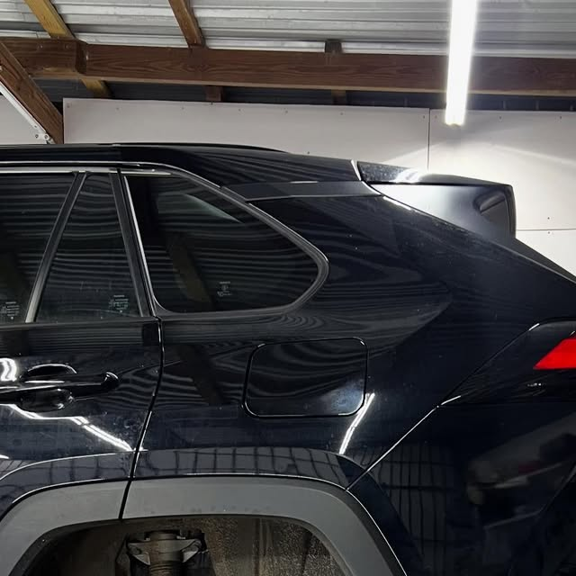

Correccion de pintura
Eliminacion de swirls, rayazos leves y marcas para devolverle profundidad y brillo a la pintura.

Aqui tu vehiculo entra para un diagnostico completo y sale como nuevo. Correccion de pintura, ceramica y tapiceria con el cuidado de una clinica y la precision de un taller.
Cada vehiculo que entra se evalua antes de tocarlo: pintura, cristales, interiores y tapiceria. Asi el tratamiento que recibe es el que realmente necesita.
Revisamos pintura, manchas de agua, swirls y el estado de la tapiceria para definir el plan de trabajo.
Correccion de pintura, descontaminacion y restauracion de focos y aros hasta devolver el brillo original.
Recubrimiento ceramico y sellado para que el resultado dure y el mantenimiento sea mas facil.

Eliminacion de swirls, rayazos leves y marcas para devolverle profundidad y brillo a la pintura.

Proteccion ceramica para carroceria y plasticos, con acabado duradero y facil mantenimiento.

Lavado completo exterior e interior, descontaminacion y limpieza a fondo, no un lavado rapido.

Tapizado y reparacion de interiores de autos, con materiales resistentes y terminacion limpia.

Tapiceria para botes en vinyl marino, hecha para aguantar sol, agua y uso constante.

Tapizado para campers y RV, renovando interiores completos para viajar comodo.

Remocion de manchas de agua en pintura y cristales que no salen con un lavado normal.

Focos opacos devueltos a la claridad y aros reparados, incluyendo acabados black chrome.
Fotos de trabajos publicados por DetailingTology Clinic en su Instagram.

En Adjuntas, Puerto Rico. Coordina tu visita por WhatsApp al 787-378-9751.
Si, se trabaja por cita para dedicarle a cada vehiculo el tiempo que su tratamiento requiere. Escribenos por WhatsApp para separar tu espacio.
Es el proceso de pulido que elimina swirls, rayazos leves y defectos de la pintura para devolverle brillo y profundidad antes de protegerla.
Si. Ademas de autos, trabajan tapiceria marina para botes y tapizado para campers y RV.
Es un lavado completo y a fondo, con descontaminacion y limpieza interior, muy distinto a un lavado rapido de mantenimiento.
Por WhatsApp al 787-378-9751 o por mensaje directo en Instagram: @dtcdetailingtologyclinic.
Escribenos y cuentanos que necesita tu vehiculo: lavado detallado, correccion, ceramica o tapiceria.